The Barn House is a Bangalore-based rejuvenation centre seeking to build a brand identity focused on holistic well-being for individuals aged 21–52 — particularly urban professionals dealing with stress. They emphasise integration of physical, mental and spiritual health. The identity needed to reflect serenity, balance and rejuvenation through warm, inviting, and trustworthy visuals.
The project had two layers: first, develop the Barn House brand identity (the superset). Second, design an online platform — a mindful eating and meal-planning app — as its digital product expression (the subset).
60% of working women aged 21–52 struggle to prioritise healthy eating due to hectic schedules, sedentary lifestyles, limited cooking skills, decision fatigue, and a market saturated with generalised solutions that don't address their personalised nutritional needs.
Research mapped the mindful eating ecosystem — benefits, challenges, current behaviours, and gaps in existing solutions — through primary research and competitive analysis.
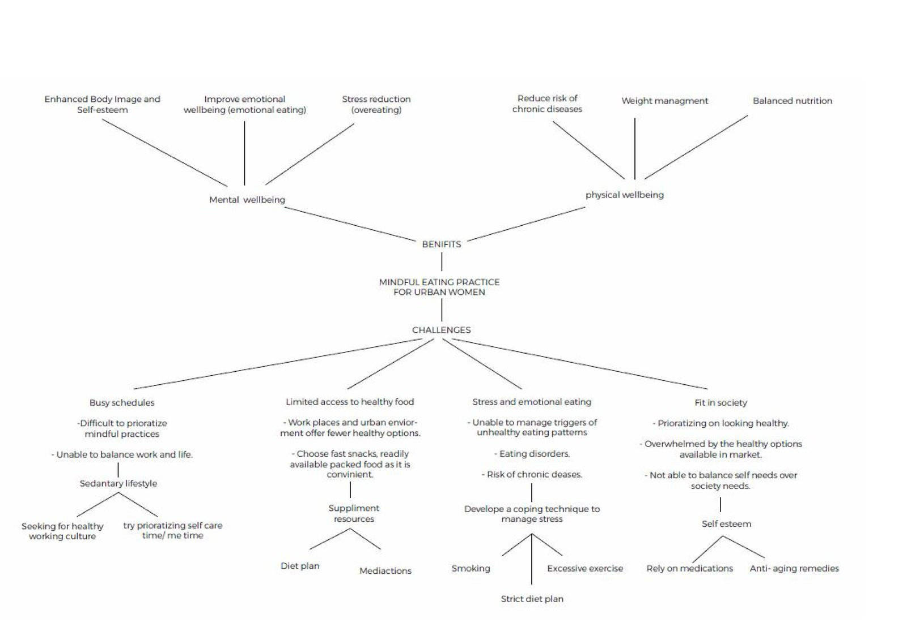
Mindful eating mind map — mapping benefits (mental wellbeing, physical wellbeing, stress reduction, weight management, balanced nutrition) against challenges (busy schedules, limited access to healthy food, emotional eating, sedentary lifestyle, self-care barriers).
Two primary personas emerged from research — both urban women navigating demanding schedules with different food challenges and goals.
"I want to eat better but I just don't have the time to research what's right for me and then actually cook it every evening."
"I end up ordering food most evenings even though I know it's not the best choice — I just need something easy that's also actually good for me and my family."
The Barn House brand needed to communicate holistic wellness without the clinical coldness of healthcare or the overwhelming visual noise of typical fitness brands. The chosen direction — Concept 4 — draws on the yoga mountain pose (a salutation posture that evokes balance between body and mind), combined with elements of nourishment (leaves) encapsulated in an organic form.
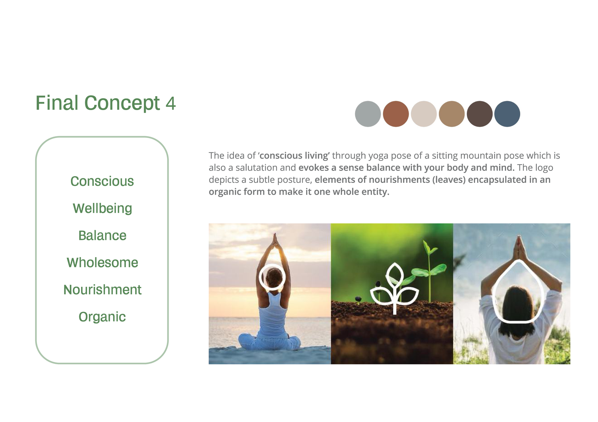
Final logo concept — the idea of conscious living through a sitting mountain pose (yoga) which is also a salutation, evoking balance with your body and mind. Elements of nourishment (leaves) are encapsulated in an organic form to make it one whole entity. Brand keywords: Conscious · Wellbeing · Balance · Wholesome · Nourishment · Organic.
Brand colour system — warm earth tones chosen to reflect warmth, trustworthiness, and natural nourishment:
Typography: Manrope Medium 20pt (headings) · Manrope Regular 18pt (body) · Manrope Light 12pt–10pt (captions). Radius: 8pt throughout. The warm earth palette communicates the approachable, organic, and nurturing quality of The Barn House philosophy.
The app is structured around five core areas: Meal Planning, Featured Library, Home (discovery), Community, and Profile. The flow from login through onboarding → preferences → personalised home → meal plan → cooking → community forms one continuous wellness journey rather than a collection of disconnected features.
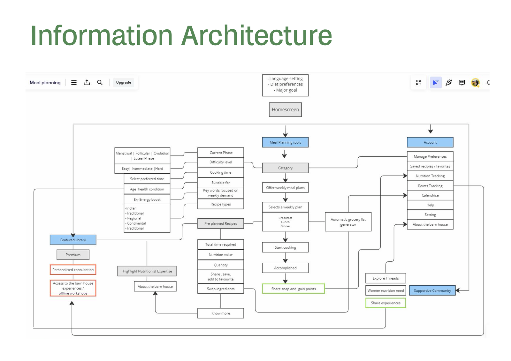
Full information architecture — Homescreen branches into Meal Planning Tools (menstrual/follicular/ovulation phases, difficulty, cooking time, category, pre-planned recipes), Account management, and Supportive Community. Automatic grocery list generation and points/gamification flow from completed meal plans.
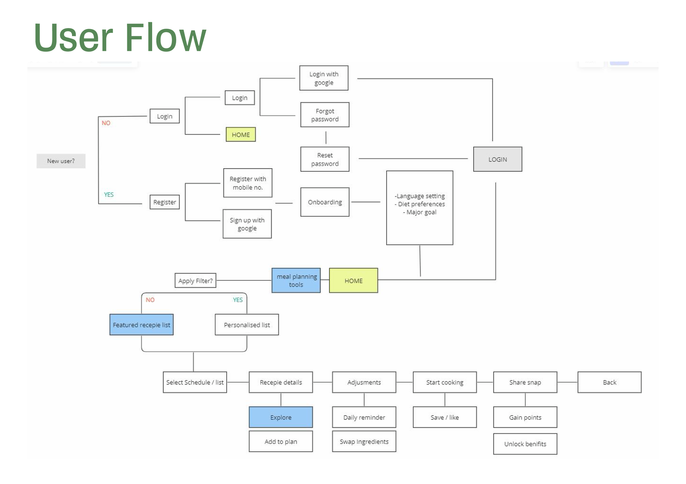
User flow — New user registers (mobile no. or Google), completes onboarding (language, diet preferences, major goal), lands on Home. From there: Apply Filter → personalised or featured recipe list → recipe detail → adjustments → start cooking → share snap → gain points → unlock benefits.
Wireframes explored the core interaction patterns before visual design was applied — ensuring navigation, layout hierarchy, and feature placement were validated before committing to colour and typography.
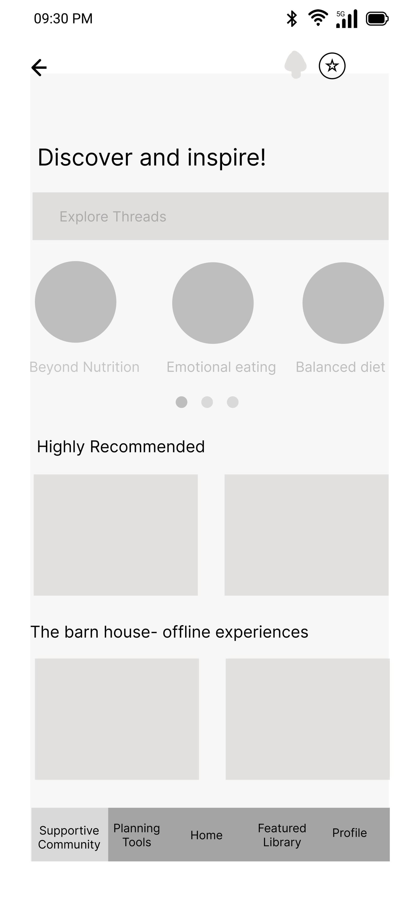
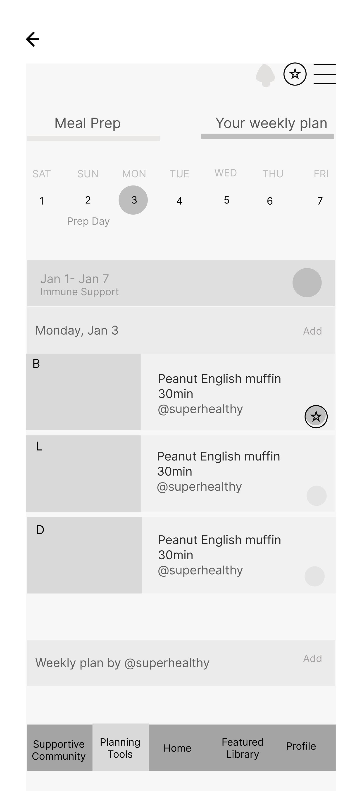
The onboarding flow collects personalisation data progressively — identity, allergies, dietary preferences, and menstrual cycle phase — without overwhelming users. Each screen asks only one question, with a warm cream background that establishes the Barn House aesthetic from the first interaction.
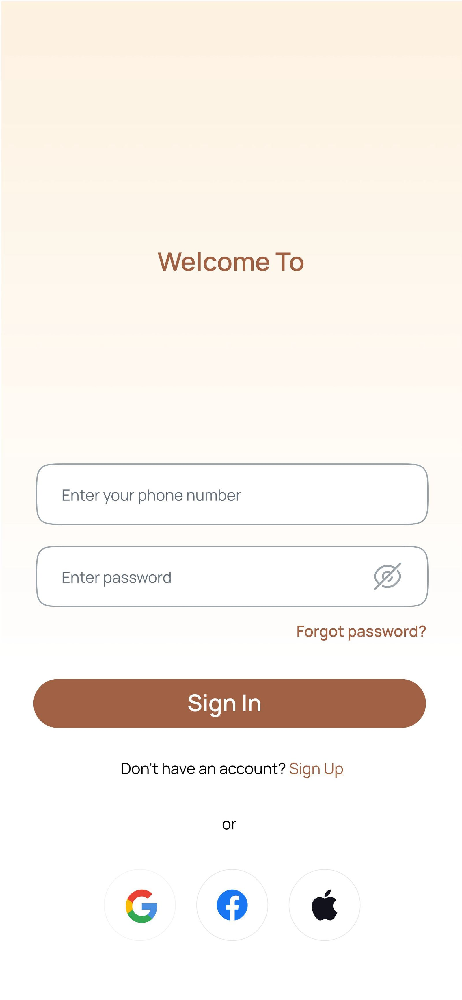
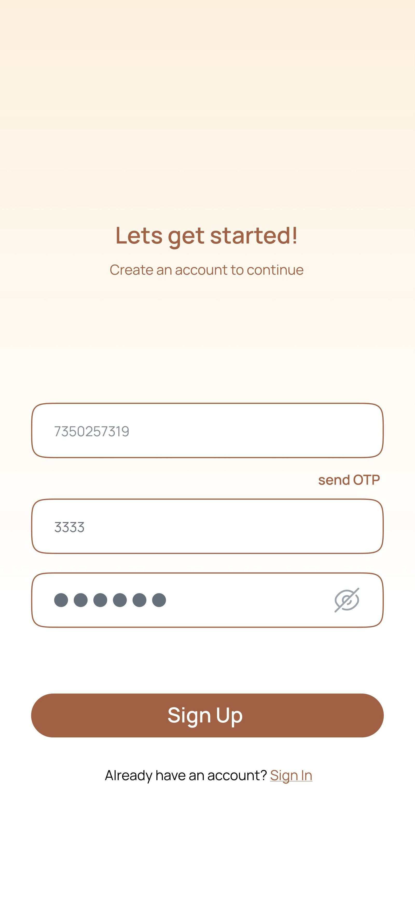
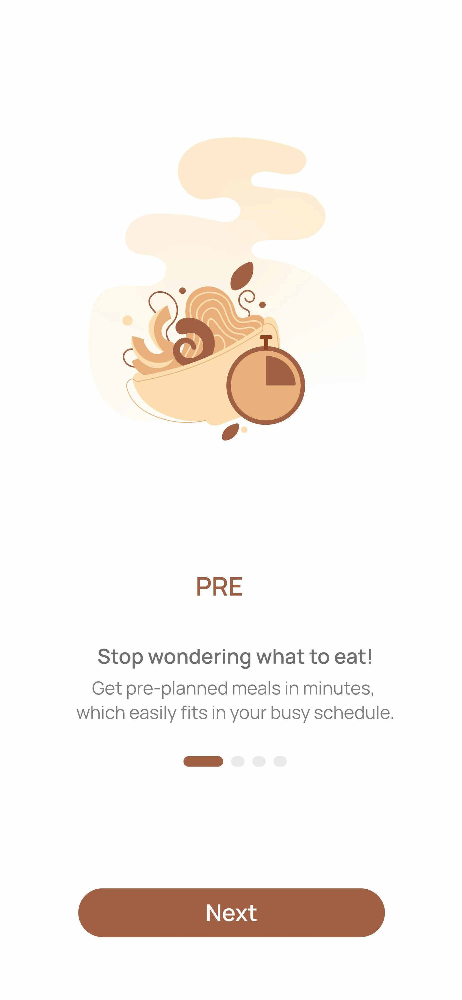
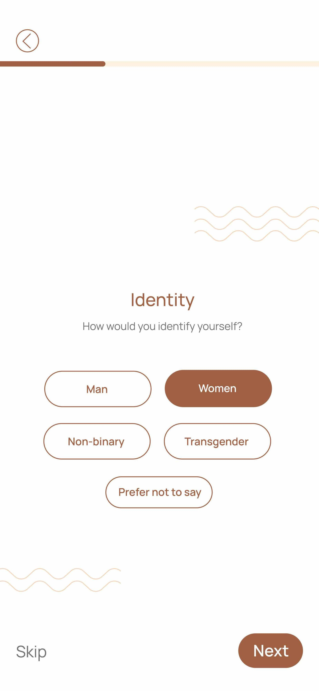
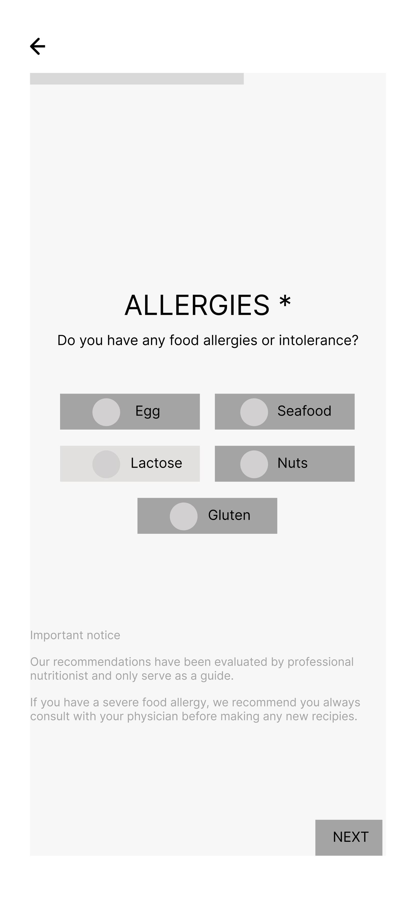
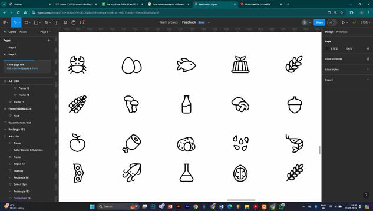
Onboarding asks about identity, food allergies (Egg, Seafood, Lactose, Nuts, Gluten), and cycle phase in progressive screens — building a personalised nutritional profile before the user ever sees a meal. A custom icon library was designed for all food categories.
The heart of the app. The weekly plan shows the user's personalised menu day-by-day, with Breakfast/Lunch/Dinner tabs, cooking time, and a "Start Prep" CTA. Recipes show full ingredients with nutrition values, step-by-step instructions, and serving adjustments — all designed for someone cooking alone after a long day at work.
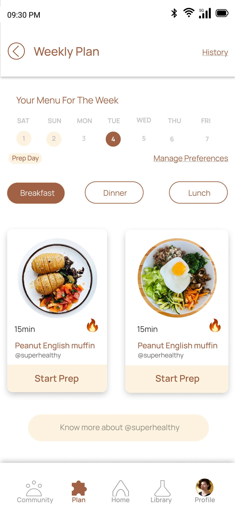
Weekly Plan — 7-day calendar (SAT–FRI), Breakfast/Dinner/Lunch tabs, meal cards with cooking time (15min 🔥), recipe title, creator tag, and Start Prep button. Prep Day highlighted. "Know more about @superhealthy" surfaces nutritionist expertise.
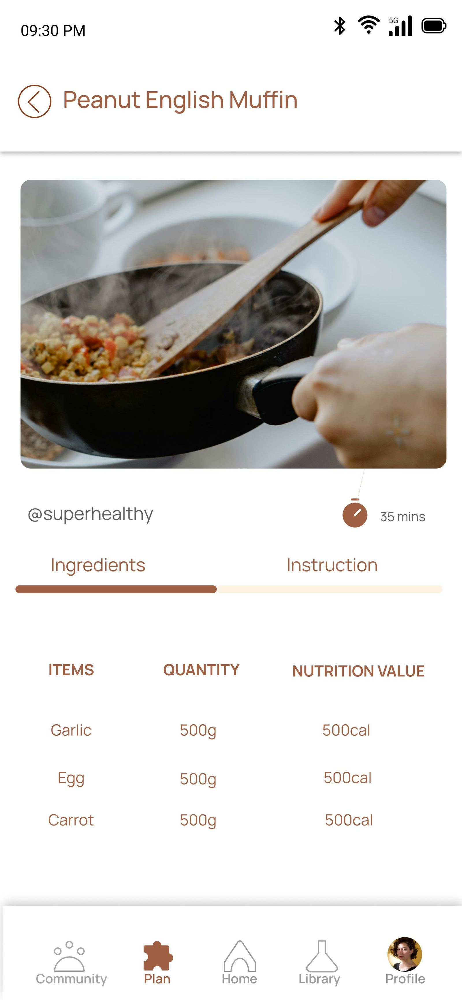
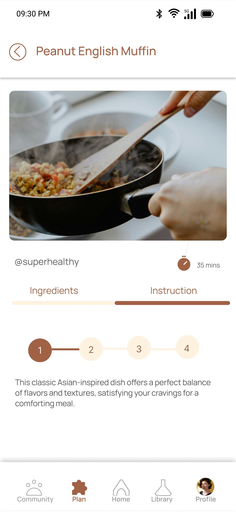
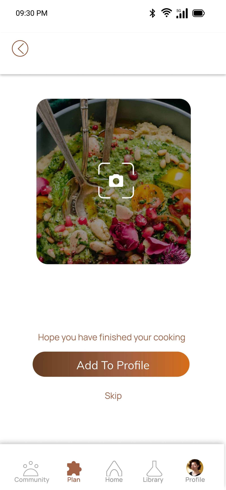
Recipe detail splits into Ingredients (with quantity and nutrition value per item) and Instruction (step-by-step progress 1–4) tabs. After cooking, users photograph their dish and Add to Profile — earning points redeemable for offline Barn House experiences (Table to Fork · Workshop · Therapy).
The community layer is what separates The Barn House from a recipe app. It's a space specifically focused on women's nutrition — with Explore Threads (Beyond Nutrition, Emotional Eating, Balanced Diet), research-backed articles, peer insights, and a "Share Your Insights" participation loop. The gamification is designed to reward community contribution, not just recipe completion.
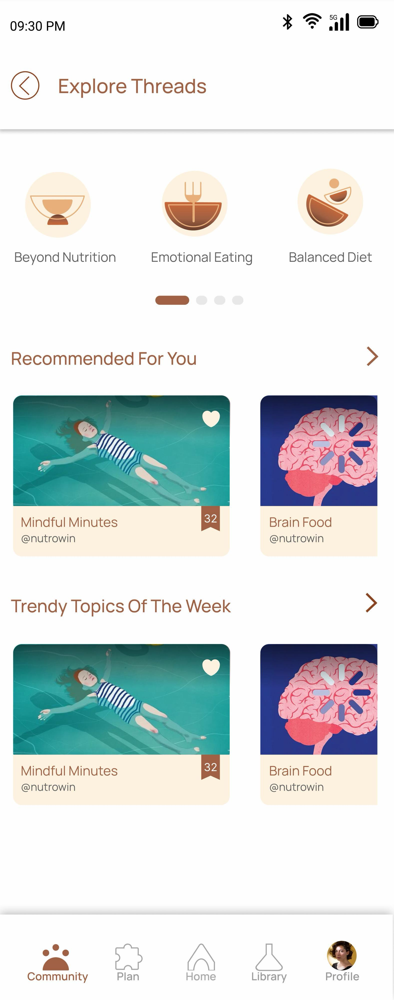
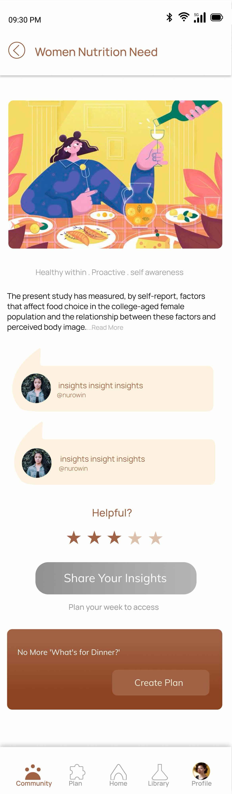
Explore Threads (Beyond Nutrition · Emotional Eating · Balanced Diet) surface research-backed content. Each thread shows the study, community comments, a helpfulness rating, and "Share Your Insights" — making every user both a learner and a contributor.
The profile system tracks the user's wellness journey over time — total points, active threads, cooking streaks, and saved content. Points earned through weekly streaks, sharing insights, and completing plans can be redeemed for offline Barn House experiences, closing the loop between the digital app and the physical wellness centre.
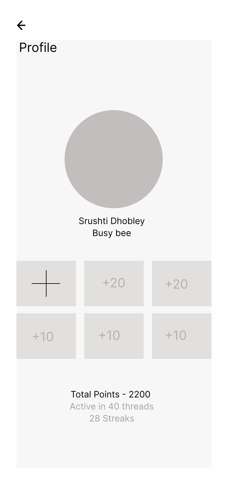
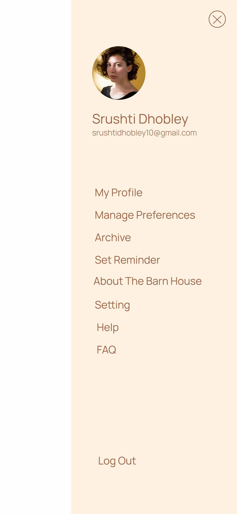
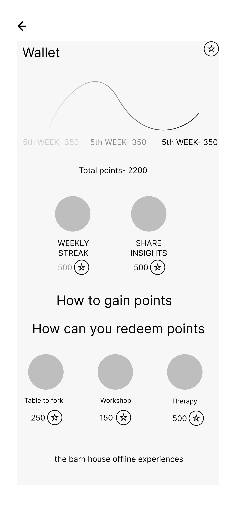
Profile tracks 2,200 total points · 40 active threads · 28 streaks. Points redeemable for: Table to Fork (250✦) · Workshop (150✦) · Therapy (500✦) — bridging the digital app to The Barn House's offline community and wellness services.
The Barn House project was the most end-to-end design work I've done — spanning primary research, competitive analysis, brand identity, information architecture, wireframing, style guide development, and high-fidelity UI across a full mobile app.
The most significant learning was the relationship between brand identity and product design. The logo concept (conscious living, organic form, balance) wasn't just a mark — it became the principle that governed every colour, type, and interaction decision in the app. When the brand has a clear idea at its core, product design decisions become easier to make and easier to justify.